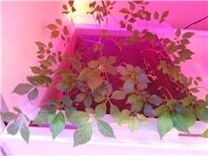
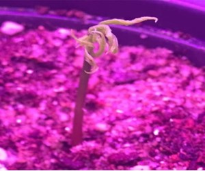
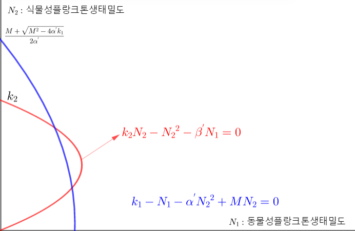
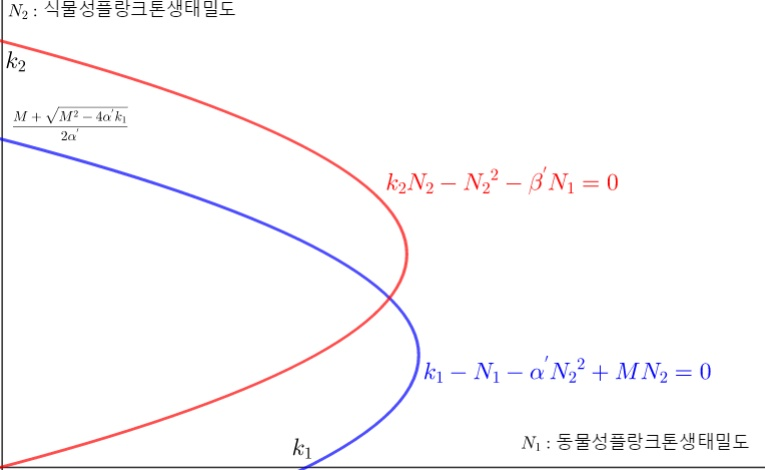
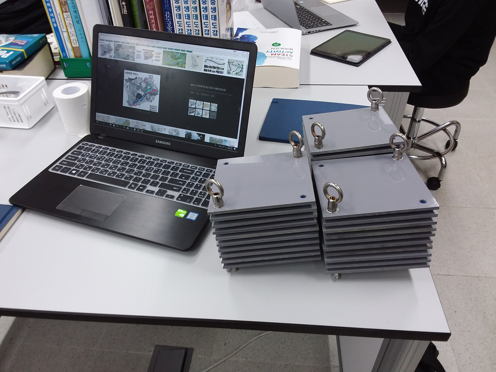
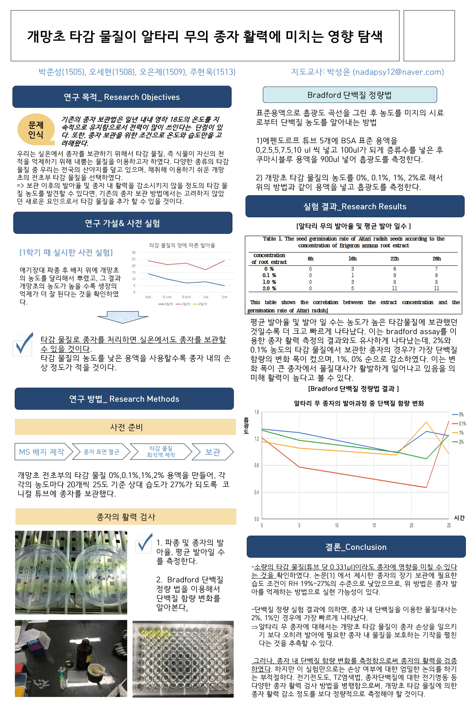

Research Activities
-
2019-2020
The Influence of the Eyespots of Peacock Butterflies (Aglais io) and Caterpillars on Predator Recognition
-
2018-2019
The effect of light source and duty ratio on the growing of Panax ginseng in a plant factory


-
2017-2018
Modelling the ecosystem of a eutrophic river by the Lotka-Volterra Model



-
2017
The effects of Erigeron annuus L. 's allelochemicals on seed germinability of Raphanus sativus var. sativus



- Conducted research throughout two years of high school.
- Refuted the existing theory that the eyespots on insects’ wings or bodies increase their survival rate by making predators perceive them as larger predators.
- Published a paper on these research results in Open Science Journal.
Article: The Influence of the eyespots of peacock butterfly (Aglais io) and caterpillar on predator recognition
{kind=link}
{kind=link}
- Researched the growth reaction of a special crop of wild ginseng according to the wavelength and duty ratio of the light source in the plant factory.
- Measured the diameter, weight of the ground, and underground parts of Panax ginseng in various environmental conditions.
- Measured respiration rate and photosynthesis rate.
- Published the article in Creative Critical Thinking, a youth journal.
Article: The effect of light source and duty ratio on the growing of Panax ginseng in a plant factory
{kind=link}
{kind=link}
{kind=link}
- Modelled the differential equation of the Lotka-Volterra model and explained how a river ecosystem was contaminated with green algae.
{kind=link}

- Conducted a study about the effect of allelochemicals on seed germinability.
- After treatment of extractant, the germination capacity of radishes was measured with Bradford assay, revealing that the substance suppresses temporary seed germination but does not affect the overall germination ability.